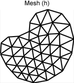
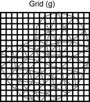
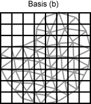
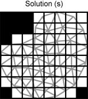

Basis definitions
A basis is used to approximate a continuous function in space f(r)
by an approximation g(r) = Σi gi ui(r),
where gi are basis coefficients, and ui(r) are basis functions.
Given an n-dimensional basis B = {ui} over the domain,
an image f can then be expressed by an n-dimensional coefficient vector
G = {gi).
TOAST uses a number of different basis definitions for specific tasks:
- Mesh (h). A piecewise polynomial basis defined by an unstructured mesh.
This basis is used by the forward solver module to define the finite element light transport model.
- Grid (g). A piecewise bi- or tri-linear regular basis. The g-basis is generally used as an
intermediate step to map between the forward and inverse bases. It is usually of higher resolution than the
inverse basis.
- Basis (b). A piecewise bi- or tri-linear regular basis for the inverse solver. This is the
basis in which the reconstructed images are expressed. The b-basis defines a rectangular or box-shaped volume
that may contain voxels which are outside the original object domain. It is useful for displaying reconstruction
results.
- Solution (s). A subset of the b-basis which excludes any voxels with no overlap with the
object domain. All solution vectors in the inverse solver module are expressed in this basis.




Basis mapping
A common task in a TOAST script is to map an image between different basis definitions. This can
be done with the mapping functions provided by the basis mapper object. A basis mapper is
created with the toastSetBasis function:
hBasis = toastSetBasis(hMesh,gdim,bdim)
where hMesh is a mesh handle (obtained for example by a call to toastReadMesh),
which defines the h-basis. gdim and bdim are integer vectors of size 2 or 3 defining the dimensions of the g-basis
and b-basis, respectively. These bases are automatically aligned with the bounding box of the mesh.
The s-basis is created by the basis mapper by checking the overlap of the b-basis with the h-basis.
The returned handle for the mapper object, hBasis, can then be used with one of the mapping functions
to map an image from one basis to another, for example
b_img = toastMapMeshToBasis (hBasis, h_img)
If the last parameter in the call to toastSetBasis is omitted,
hBasis = toastSetBasis(hMesh,dim)
then the intermediate (g) basis is not generated. In this case, g and b basis are considered equivalent,
and the mapping between them is the identity. This is more efficient than specifying both gdim and bdim with
identical dimensions.
Because the mapping between b and s basis only involves the removal of unsupported voxels, it can
be implemented by a permutation array. You can obtain this array by a call to
toastSolutionMask:
mask = toastSolutionMask(hBasis)
To map from b to s basis:
s_img = b_img(mask)
To map from s to b basis:
b_img(mask) = s_img
Examples
Read a mesh, and create a basis mapper to map a nodal image into a regular grid that can be
displayed by Matlab:
hMesh = toastReadMesh('MyMesh.msh');
hBasis = toastSetBasis(hMesh,[128 128]);
h_img = toastReadNIM('nodal_mua.nim');
b_img = toastMapMeshToBasis(hBasis,h_img);
imagesc(reshape(b_img,64,64));
toastDeleteBasis(hBasis);
toastDeleteMesh(hMesh);